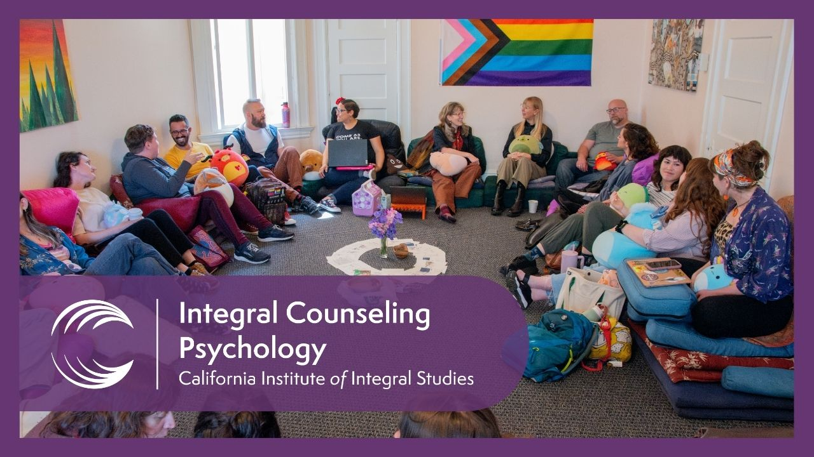

Pedagogy
Tools, templates, and source materials to help you design and deliver courses in the ICP tradition.

Finding syllabi, course descriptions & rubrics
Past syllabi
Open the SharePoint syllabi folder for ICP. Log in with your CIIS email and password.
Syllabi folderCourse descriptions
Access through Colleague/Ellucian, then click the Course Catalog tile.
Colleague/EllucianCourse design & syllabi
CIIS provides a standard syllabus template that meets accreditation requirements while leaving room for your own pedagogical voice. Finalize your syllabus and send it to your co-chairs and program coordinator before the semester begins.
Syllabus template
Includes required CIIS policy language, a learning outcomes section, and a grading rubric framework.
ICP syllabus template 2025 (Word)Learning outcomes
Map ICP program-level learning outcomes in your syllabus. Your program coordinator can provide the current outcome matrix for your course.
Academic calendar
Key dates: semester start and end, holidays, the final exam period, and grade submission deadlines.
CIIS academic calendarCanvas LMS
CIIS uses Canvas for syllabus distribution, assignment submissions, grade posting, and announcements. All courses are expected to have a Canvas shell, even primarily in-person courses.
Canvas basics for ICP instructors
- Upload your syllabus to the syllabus module before the first class
- Use announcements to communicate class changes or reminders
- Post assignments and enable online submissions when appropriate
- Enter grades in the gradebook — students see these in real time
- SpeedGrader allows annotation and audio feedback on submissions
Get access & learn Canvas
Your Canvas account is linked to your CIIS email. If you do not have access within a week of signing your contract, contact IT support.
Library & research resources
The CIIS Library is on floor 2 of 1453 Mission St. Faculty have full borrowing privileges and access to all digital databases.
Physical collections
Specialized holdings in transpersonal psychology, somatic therapy, depth psychology, social justice, and world philosophies.
Digital databases
PsycINFO, PEP-Web, JSTOR, ProQuest, and other databases. Access with your CIIS credentials from anywhere.
Course reserves
Place required readings on reserve — physical or electronic — at least three weeks before the semester begins. Texts can also be put on Canvas.
Teaching approaches in the ICP tradition
ICP courses integrate CIIS's commitments to experiential learning, integral frameworks, and social justice.
Experiential & somatic methods
- Check-ins and closing circles to build a relational container
- Dyads and small-group process work
- Mindfulness, embodiment, and somatic awareness exercises
- Role plays and clinical vignette discussions
- Expressive arts as reflective practice
Social justice integration
- Power, privilege, and positionality mapping
- Readings centering BIPOC, LGBTQ+, and disabled voices
- Cultural humility in clinical case discussions
- Critical analysis of DSM categories and psychiatric power
- Intersectionality as a lens for client experience
Teaching guides
Practical guides for course design and teaching in the ICP program.
Strategies for learning online
Approaches for engaging, effective online and hybrid teaching.
Open PDFInstructions for how to teach
A practical guide to teaching expectations and approaches in ICP.
Open PDFConsistency & predictability in course design
How a consistent, predictable course structure supports student learning.
Open PDFTeaching & AI resources
External resources to support course design and teaching with — and about — AI.
Columbia CTL — AI in teaching
Columbia University's Center for Teaching and Learning hub of practical guidance, examples, and tools for thoughtfully using AI in your courses.
Explore the AI hubDead Ideas in Teaching & Learning
Columbia CTL's podcast that surfaces and challenges common misconceptions about teaching and learning in higher education.
Listen to the podcastAI Pedagogy Project
A collection of assignments and readings from metaLAB at Harvard to help educators explore critical, creative uses of AI in the classroom.
Visit aipedagogy.org